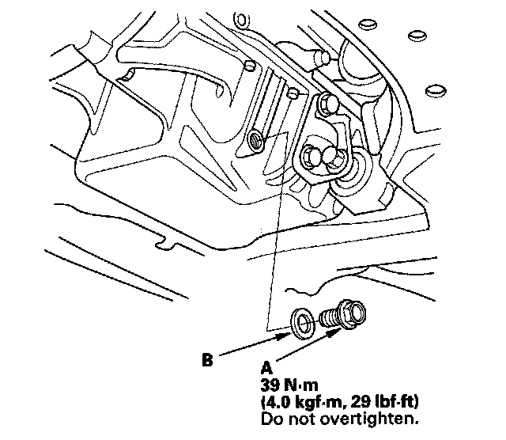
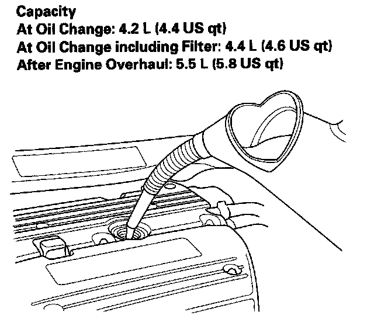

Engine Oil: Service and Repair
Engine Oil Replacement1. Warm up the engine.
2. Remove the drain bolt (A), and drain the engine oil.

3. Reinstall the drain bolt with a new washer (B).
4. Refill the engine with the recommended oil.

5. If the maintenance minder required to replace the engine oil, reset the maintenance minder, then go to step 8. If the maintenance minder did not require to remove the engine oil, go to step 6.
6. Connect the Honda Diagnostic System (HDS) to the data link connector (DLC).
7. Turn the ignition switch ON (II).
8. Run the engine for more than 3 minutes, then check for oil leaks.